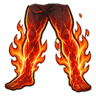
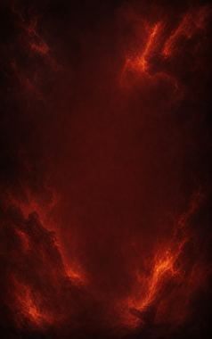
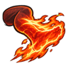
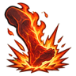
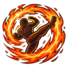
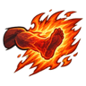

Burning Legs C
Heat the legs red-hot for a fight: kicks only, and they burn.
| Rank | Chakra | Cooldown | Class level |
|---|---|---|---|
| C | 14 | 15 s | 3 |

Technique trees › Fighting and weapon styles
6 techniques · Taijutsu tab
Unlocks through World of Naruto's own trees, a gene, a build choice or a profession.

Heat the legs red-hot for a fight: kicks only, and they burn.
| Rank | Chakra | Cooldown | Class level |
|---|---|---|---|
| C | 14 | 15 s | 3 |

A red-hot shin kick to one enemy.
| Rank | Chakra | Cooldown | Class level |
|---|---|---|---|
| C | 14 | 15 s | 5 |

A heel dropped like an axe on one enemy.
| Rank | Chakra | Cooldown | Class level |
|---|---|---|---|
| B | 24 | 25 s | 8 |
Kick off the air and through a line of enemies.
| Rank | Chakra | Cooldown | Class level |
|---|---|---|---|
| B | 24 | 25 s | 10 |

A spinning burning kick around the user.
| Rank | Chakra | Cooldown | Class level |
|---|---|---|---|
| A | 40 | 50 s | 14 |

S-rank. Every bit of heat poured into one kick.
| Rank | Chakra | Cooldown | Class level |
|---|---|---|---|
| S | 80 | 250 s | 18 |